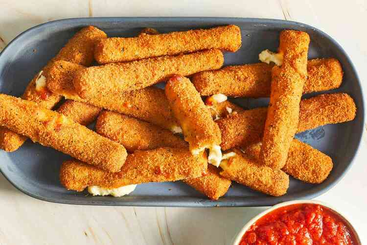

Fried Mozzarella Cheese Sticks

Description
Breaded and subsequently fried sticks of mozzarella cheese.
Ingredients
- 2 large eggs, beaten
- ¼ cup water
- 1 ½ cups Italian seasoned bread crumbs
- ½ teaspoon garlic salt
- ⅔ cup all-purpose flour
- ⅓ cup cornstarch
- 2 cups oil for frying, or as needed
- 1 (16 ounce) package mozzarella cheese sticks